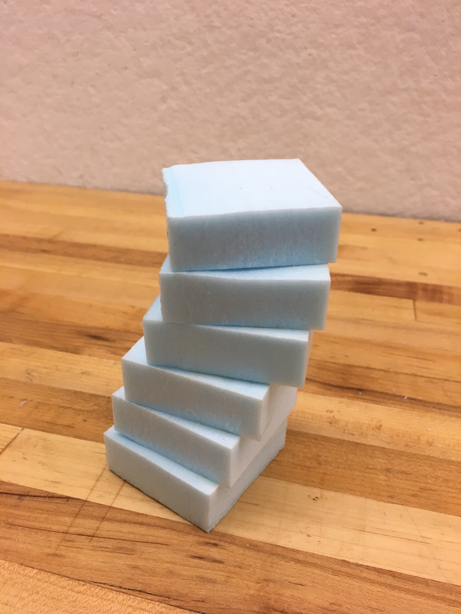
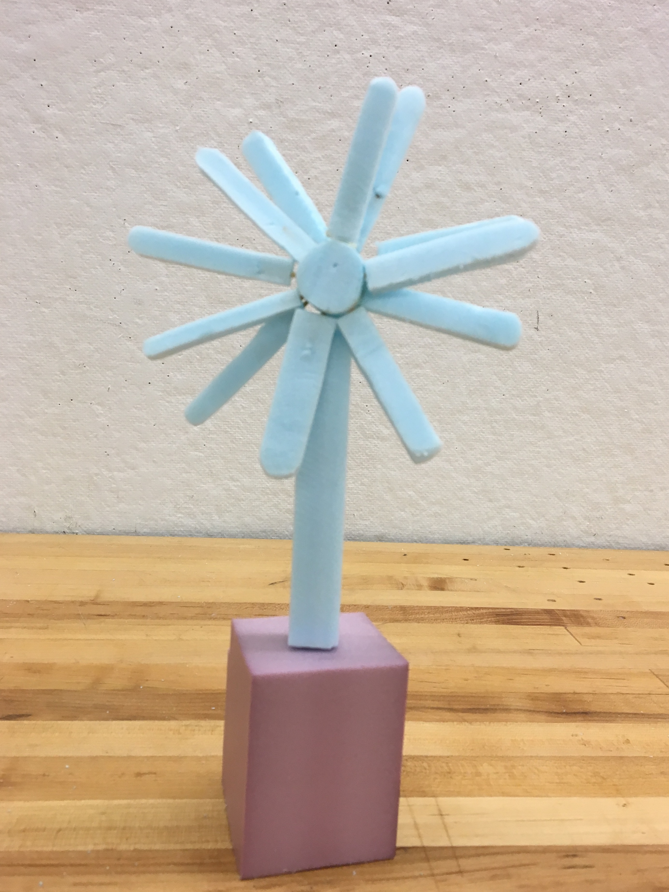

Week 5 : Iteration vs Evolution
Assignment: Produce 20 sketch models of your idea using one type of material: blue foam; paper; etc.
Since my original idea was based on a distributed system of light involving a living space, it was difficult to create physical models for it. Furthermore, there was no light source design involved. Instead, I decided to consider an extension along the productivity theme: A common difficulty for me is keeping track of time without consciously remembering to check my phone or keep an alarm (which is not ideal in workspaces). The one drawback of observing time traditionally is that the environment around us doesn't offer any indication of change. Just like how nature modifies the light around us to indicate day, evening or, night - I wanted to create a light source within the indoor environment that could be present this change. The following models all incorporate time as the major component.


#1 The Bar
My initial model is a simple bar of light with certain vertical indicators which show gradual increase or decrease of time. With the passing of time, the bar gets slowly filled up, and vice versa. The inspiration behind this was a thermometer - a vertical device that simplifies the process of displaying change.
#2 The Stack
The bar of light could be improved by using it as a stack with different layers. Therefore, the next iteration involved dividing up the bar into levels that get turned on/off in sequence with time. This provides independent control over the different layers and shows clear divisions. Eg: After 1 hour, a layer of light is turned off.

#3 The Staircase
The third iteration was a design decision. How can I make the simple stack of lights look more pleasing to the eye, and at the same time understand the passing of time? Designing the stack as a staircase helped solve this dilemna aesthetically and also meaningfully, where time correlates to ascension/descension of the stairs.

#4 The Panel
Instead of using a specific light source as an indicator of time, I thought a panel that could enclose any generic light source and would open or close sections to let light out was a more modular option.
#5 The Mood Panel
The shimmering of water due to light or light escaping through tree canopies from above form patterns that are soothing, alleviating stress and anxiety. Having panels around light devices which create this patterns (crunched plastic to represent water effect) especially around stressful times of the person's day can help modify the light in the room.

#6 The Hourglass
A further iteration on the stacked light, this is an hourglass that encapsulates falling pixels of light to indicate time similar to a regular hourglass, but it can also be set to any time as desired - thereby affecting the speed of light transitions.

#7 The Candle
An iteration on the stacked model + hourglass, this is a candle with a flexible melting time that can be set by the user. Upon setting this to an hour, the candle gradually appears to melt away for an hour using light modifications and the control of a clock.

#8 The Daisy
This model is derived from the concept of the "He loves me , he loves me not" adage, where each petal of a flower is removed one by one. Here, a petal signifies a duration of time, such as 1 hour, 2 hours, and so forth, turning on and off.

#9 The Ocean
The concept for this iteration was surrounded the movement of the ocean - how the tides change depending on whether it is morning/evening.

#10 The Sky Bar
A simple, vertical wall/desk clock that indicates the position of the sun or the moon in the sky.

#11 The Tree of Time
Inspired by a nerves-like sketch at the MIT Architecture studio, I came up with an idea to create a wall/desk light clock that uses the branches of a tree to represent time. One way is to turn on/off the lights on individual branches, while another is to represent the duration of the day as seasons by changing the color of the leaves.
Morning -> Spring. Afternoon -> Summer.
Evening -> Fall. Night -> Winter.
#12 The Creeper
This model is inspired by lights in my own bedroom. Upon purchase of a set of flower fairylights, instead of hanging them around my room, I decided to wrap them around my lamp instead. (Like a creeper) Controlling the lighting up of each individual flower/element is another iteration on incremental time representation.

#13 The Window Bar
As a slight break, looking towards the window is a common inclination while working. The window panel space, both at the top and bottom, is an area that has the potential to be redesigned to serve multiple purposes. An example of using this area includes having an attached bar of light, displaying the incremental passing of time.

#14 The Hour Bubbles
Ever felt the need to physically touch and pop your tasks away? This iteration uses reverse tracking of time, where the user self-assigns certain hours for the day and upon touching a light bubble, turns them on and off. This is good for giving an estimate of how many hours you are left with in the day.

#15 The Laptop Centipede
Most changes (in time or otherwise) are significantly registered only if they are within a line of sight. While working on a laptop, it's easy to lose track of time without any change around the environment indicating this. Having a light wrap around the edges of the laptop, similar to the glowing blue edge on the Amazon Echo, except increasing/decreasing unit by unit creates a centipede like effect. This way, I can tell time every 5 minutes without consciously remembering to do so.

#16 The Desk Centipede
This iteration is similar to that of the Laptop Centipede, except having a light device attacked to the edge of a desk instead. Looking down tells me time passed.

#17 The Arc
A desk light that can double as a wall light representing a linear and curved view of the duration of the day.
The Moonflower
For the last few iterations, Prof. Justin Lavallee helped me envision a moonflower blooming at night, as a basis for a light device that gradually unfolds/changes its shape with the passing of time. I used a combination of blue foam and paper to create these models.

#18 The Moonflower - Bud
#19 The Moonflower - Transition
#20 The Moonflower - Bloom